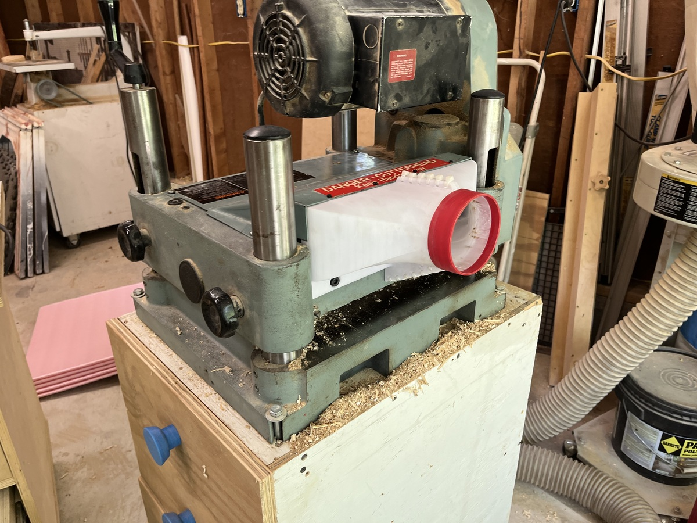
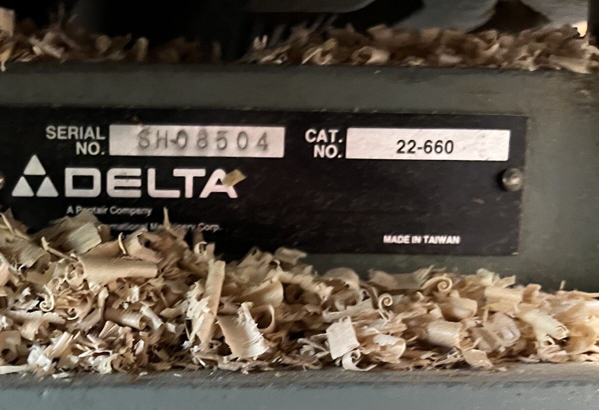
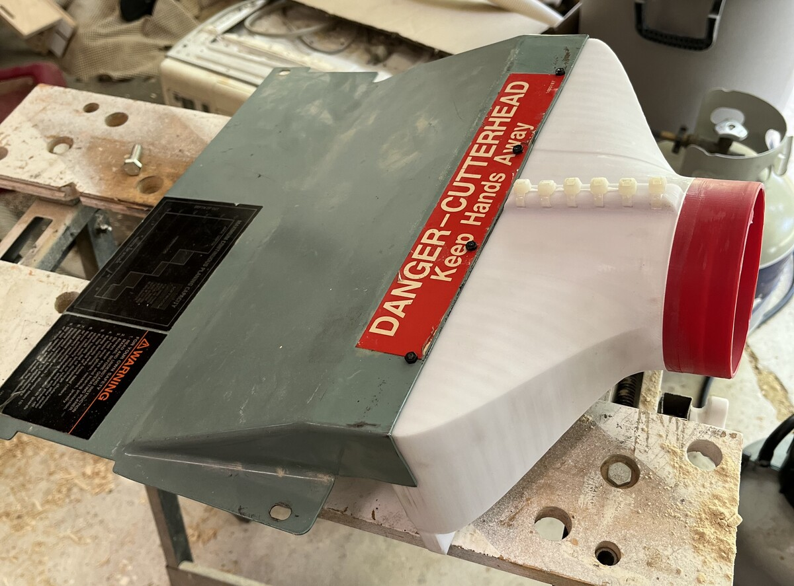
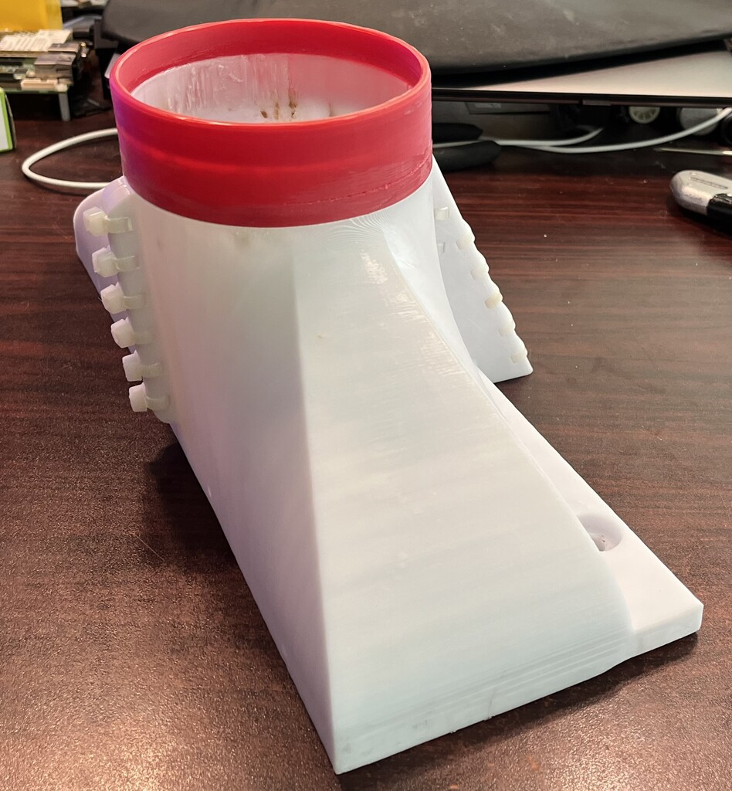
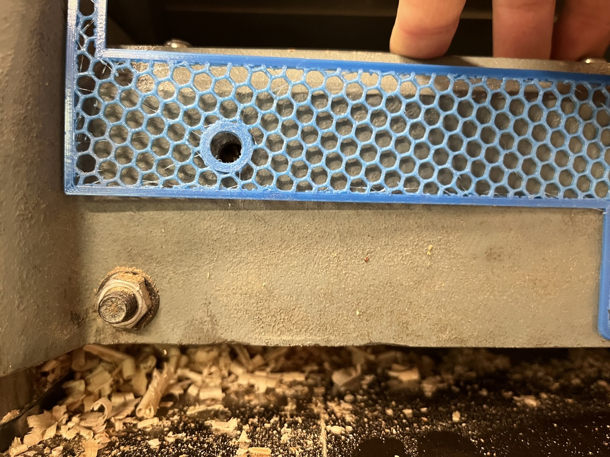
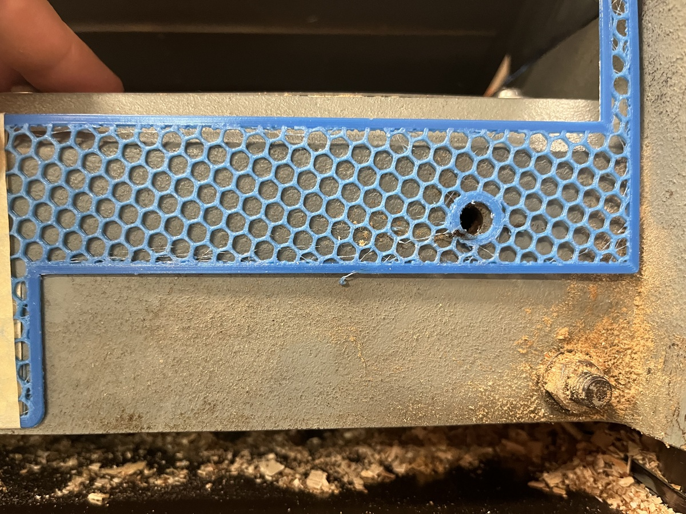

Delta 22-660 Dust Hood
Published: 06/24/2022 11:48:41
Print your own Delta Planer 22-660 Dust Hood with a 4" quick-disconnect port!

Make one for yourself
Why and How
Years ago, I procured a Delta 22-660 Planer. It's a 13" model that was built in the 1980's, and these stout machines are fantastic.

At the time I bought it, it had no dust-port / shroud / hood on the back, and the gentleman I purchased it from told me he only ran it outside, and taped a piece of cardboard to the back to deflect chips. He was the original owner.
Over the last thirteen years I've run hundreds of board feet (possibly thousands) through this machine, and produced a ton of dust... I had made a sheet-metal hood that was very... boxy, and would get clogged regularly.
Since first building a 3d printer I've dreamed of being able to design and build a dust hood for this machine. I finally did it.
It turns out, there might be quite a bit of demand for these. The original OEM parts were cast-iron, and sell once in a great while on e-bay for nearly $450 USD. That's more than I paid for my planer, knife setting jigs, and extra set of knives. Having taken up Fusion360 in the last year (farewell, OpenSCAD -- you served me for a time) with the hobbiest license, it was time to revisit this idea. The result is a print-it-yourself Fusion360 model of a dust hood for a Delta 22-660 13" planer.
This hood should fit any machine that has similar model numbers to this one:

I used four M3 bolts to anchor it to the top plate, as well as M8 socket cap screws to attach the bottom to the back of the planer.

Assembly
The design prints in 3 parts. It's parametric for wall size and some other settings. I've assembled mine with zip-ties and silicone caulk between mating surfaces of the printed parts to form a gasket.

Design
During the design phase, I took my time and made several test pieces for critical spacing prior to printing. I would do this by slicing the model just a few layers thick, omitting top & bottom solid fill, and using a honeycomb and the cheapest filament I have on hand.
 